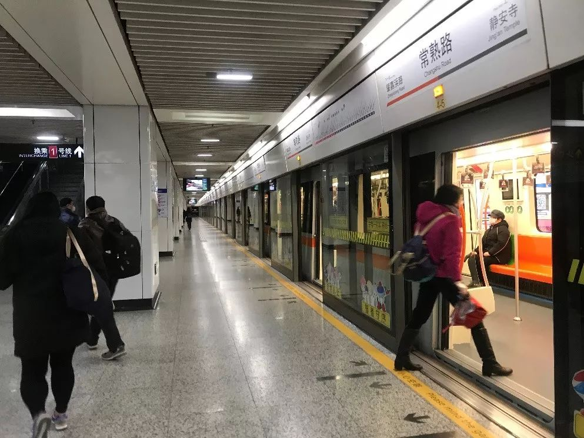
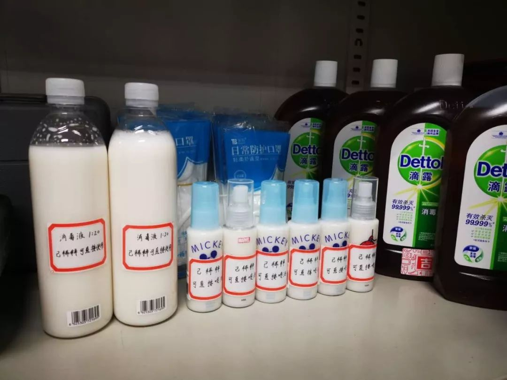
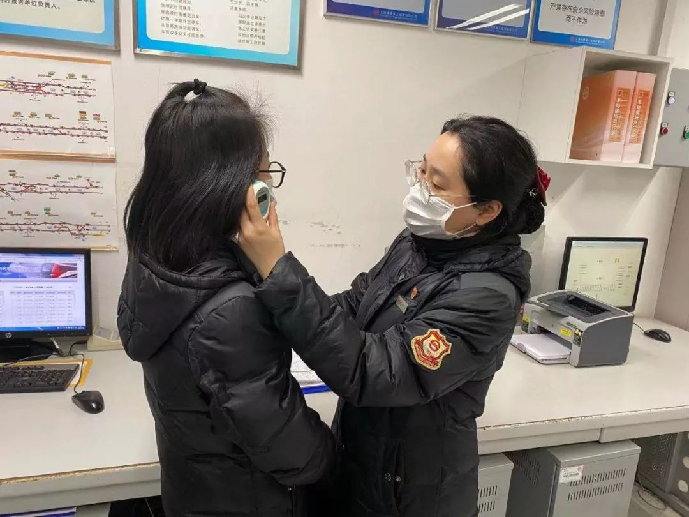
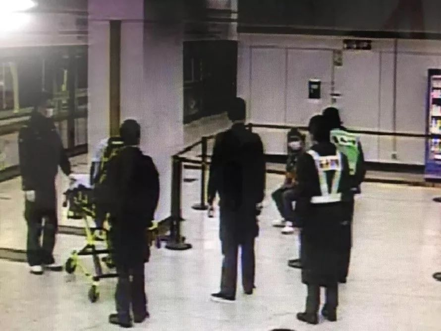
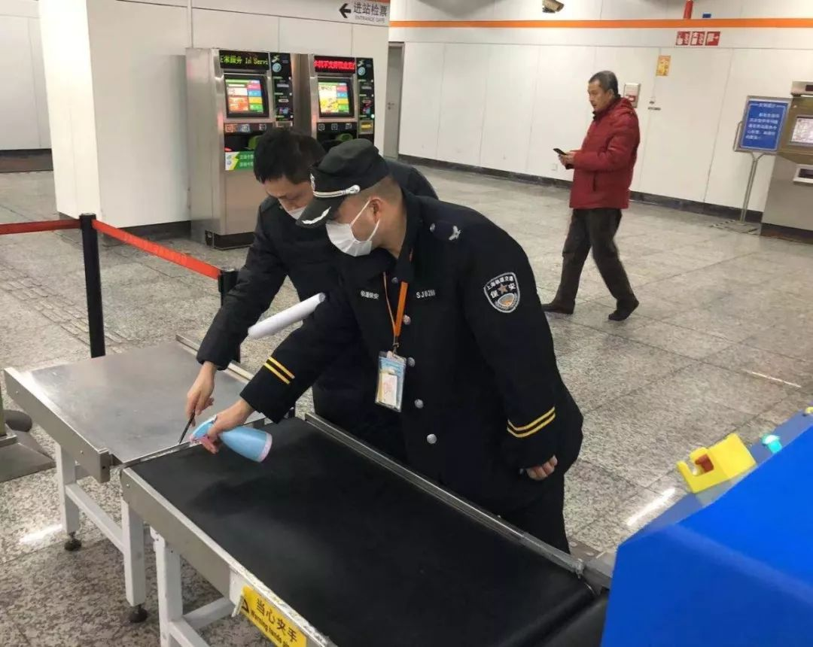
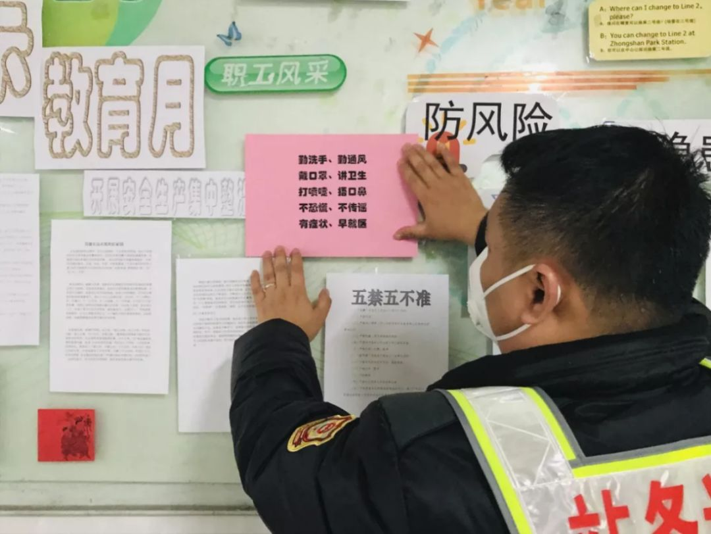
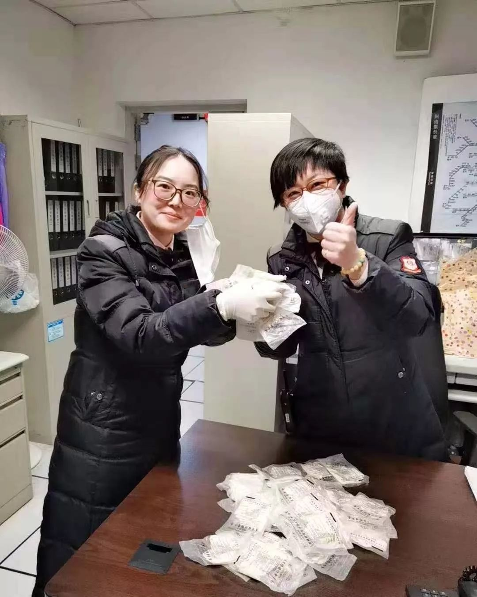

不能奔赴抗疫一线，普通人可以做什么?
原文链接 备份链接 - 疫 情 之 下 - 只有在这样的特殊时刻，我们才体会到平平常常的日子是多么美好，多么幸福…… ” 疫情爆发得如此迅猛，让所有人始料未及。 己亥年腊月二十九，公历2020年1月23日，我去单位上年前最后一天班，那时我 …
我是值班站长，我更心疼每天在站台、在收银台、在闸口、安检口值守的同事们，如果你问我，他们的父母会担心吗？会害怕吗？我想都会有的，但没有一个人说过，要请假，要退缩，要放弃。
口述| 王丽丽
整理| 吴 雪
大年初十，清晨4：30，我比往常提早了半小时出门，老公从家里开车送我到接驳地铁站，前往工作地点上海7号线常熟路车站，作为地铁系统的一名普通值班站长，在常熟路站工作了11年，早已习惯了春节没有假期的日常，只是今年格外地不同。

2月6日的7号线常熟路地铁站，受访者供图
我叫王丽丽，同事们都叫我“丽姐”。
常熟路早班车的运营时间是六点零一分，每到值班换班的前一晚，为了做好每班之间的衔接工作，我们3位值班站长都养成了隔天晚上电话沟通、交接事项的习惯。自从1月22日，站点要求必须戴口罩、进出站消毒测体温的通知下发开始，运营前的准备工作变得不同寻常，站长作为第一个到站的人，提前到站的这30分钟，尤为重要。
清晨5：30，我到了车站。除了巡视站厅、站台和7个出入口，发放备用金等常规准备工作外，先是配置了1：20滴露稀释消毒液，补足了客服中心、车控室、值班站长室等重点部位的分装瓶，又额外稀释了2大瓶以备随时取用，在客服中心简单喷洒消毒后，等保洁阿姨来了之后，再用小喷瓶二次彻底消杀。

站点配备的1：20滴露稀释消毒液，受访者供图****
5：42，早班的员工开始陆续到岗了，在班前会上，我重点叮嘱每个岗位的员工“戴口罩要规范，口鼻都要遮住”“换岗休息第一件事就是洗手，别忘了用洗手液”。这些也是其他站长昨晚重点叮嘱的。5：54，首班车准时到达常熟路站。监护开关门作业，目送列车驶离站台，而我一天的工作也才刚刚开始。

7号线常熟路站值班站长王丽丽（右一），正在为同事测体温。受访者供图****
常熟路站是大站，紧挨着静安寺，工作日高峰期时人流量最高能达到10万人次，加上换乘站多，站点附近分布的医院也多，防控的不确定性很大。但情况变化得也很快，我记得，大年初一人流量突然骤降，那天ATM自助售票机的营业额只有200多块钱，包括刷卡、大都会、投币等加在一起，一天的总收入也才6800块。
虽说人少了，但我心里的那根弦仍然紧绷着，因为一旦有确诊或疑似病例乘坐地铁，对我们的考验会非常大，为此，我所在的运三公司，为有效阻断疫情扩散传播，根据人流量的划分，启动了A方案、B方案和B+方案。比方说，当双头班车客流达到1300人及以上时，引导乘客分散车门上车，避免扶梯处大客流聚集风险。
特别是针对乘客出现的紧急情况，设置临时隔离区。1月31日，春节值班期间，我的同事静安寺站值班站长施悦峰，曾遇到过一名发热病人，那天早上7：28，一位乘客到站下车后，询问站务员董昉毅附近有没有医院，得到答案后仍逗留在站台。

发热病人在7号线静安寺站临时隔离点，受访者供图****
董昉毅主动上前询问情况，乘客这才反映：“身体不适，有发烧的症状。”虽然后续120医护人员到达现场测量体温后，发现该乘客体温正常，但出于对乘客健康负责，在征得乘客同意后，120医护人员将该乘客送往华山医院。同时，车站安排了一名工作人员跟随民警乘坐出租车一同前往医院，了解后续情况。
乘客离开后，车站迅速组织开展了后续消毒工作。施站长通过视频回看，确定了乘客下车的具体车门。保洁阿姨把站厅、站台都彻底打扫消毒了，重点是下行站台2-1至2-5屏蔽门、候车椅和自动扶梯扶手等乘客停留和行走的地方。后来，根据民警查到的记录，这位乘客刚从湖南回来，情绪有点紧张，我觉得可以理解，希望他没事。

地铁工作人员正在消毒，受访者供图****
疫情当前，车站最关心的就是消毒和个人防护工作，7号线静安寺党支部根据公司党委要求，7号线党总支统筹安排，组织支部党员成立疫情防控突击队“静心保障突击队”，我们常熟路站就是其中一员。消毒工作是首要，除了列车、办公室、站台等大面积消毒外，门把手、闸口、自助售票机、自动扶梯扶手带、乘客休息室、厕所等也要做到“360度无死角”，这方面，我叮嘱保洁阿姨每间隔两个小时循环消毒一次。
作为值班站长，我每天都会时刻关注疫情数据，2月3日，我看到全国确诊病例呈现上升趋势，再加上此前无症状传染的新闻报道，内心非常担忧。毕竟，我们站点有33个员工，90后的比例占到一半，特别一些95后的“小朋友”不太好管，戴口罩久了，就想露出鼻子，或者在人少的时候取下来一小会儿。我看到后，就会反复唠叨，虽然他们嘴上会说：“丽姐，你怎么像我妈一样。”但还是会乖乖戴好。

口罩正确示范，受访者供图****

在学习园地张贴“防疫顺口溜”，受访者供图****
在我心里，保证同事们的安全以及乘客的安全，永远是第一位的。大家的吃饭问题站里也想了法子，之前是叫外卖，但疫情情况下，为了不增加外卖小哥的风险，我们尽量不叫外卖。现在大家都很自觉地带饭，卫生又安全，站点上有一个按照标准消毒的休息室，专门供员工错峰就餐，就算不小心撞在一起，大家也会主动坐很远。
做好个人防护，是对自己负责，也是对乘客及家人负责，但仍有一些现实情况需要解决。自从疫情阻击战打响以来，地铁上的物资每天消耗非常大，虽然下发了很多，但还是不够用，有时候一线岗位同事一天换一个都很难。我们也尝试着在网上采购，但都不发货。大家知道这个情况后，不同岗位上的同事，开始自发寻找物资支援，比如酒精、口罩、手套等等，这让我非常感动。
1992年出生的周佳吉是我们常熟路站点的“暖男”。大年初一15：00，他主动放弃了休息日，专门跑到第一医药连锁药房，购买物资。当看到药店门口“无口罩、无酒精、无酒精棉球”的告示，他还是走进药店，买了三盒板蓝根。之后，又特地跑了一次车站，把家里囤的100副医用乳胶手套，专程开车送到了站里。

周佳吉购买的防疫物资送到了站里，受访者供图****
静心保障突击队其中一个站点肇嘉浜路站，值班站长孙怡蕾也带着妈妈和老公跑了四家药店排队买口罩，最后终于在昌平路雷允上药店买到了，口罩限购1人5只，他们三人排了2轮，一共买到25只。孙怡蕾没有留下一个口罩，而是带到车站，放在站长室，提供未戴口罩的员工使用。孙怡蕾说，她担心万一有人没戴，站长室里面多备两个，比较安心。

肇嘉浜路站其他同事也送来了口罩，受*****访者供图*
看到同事们的行为，我心里充满了力量，有人把我们比做“最美逆行者”，但相比一线医护人员，我们只是做好自己的本职工作。我是值班站长，我更心疼每天在站台、在收银台、在闸口、安检口值守的同事们，如果你问我，他们的父母会担心吗？会害怕吗？我想都会有的，但没有一个人说过，要请假，要退缩，要放弃。
和我们一样，就在这个时刻，在中国的各个城市，他们，都在为守护一座城市、一个国家而奉献自己的热情，付出最大的努力。
23：01，列车运营结束，进入维保库做全面消毒工作，我稍稍松了一口气；23：45，我把今天所有的账款结掉，在同事们都下班后，又拿着酒精小喷瓶把办公区域消毒了一遍；23：55，我脱下手套，背上包，走出地铁口，似乎闻到了树叶发新芽的清香。
我想，春天就快要来了。
征集令
“战疫”成败，匹夫有责。
《新民周刊》现面向全国征集新冠肺炎采访对象和真实故事：
如果你是参与抗击新冠肺炎疫情的医护人员或其家属，我们希望聆听你的“战役”故事，也希望传达你的诉求。
如果你是确诊、疑似患者本人或家属，我们希望了解你和家人如何“抗疫”的过程，让外界了解你的真实经历。
如果你是疫情严重地区的普通市民，我们希望展现你的乐观，并倾听你所需的帮助。
如果你是公共服务人员或各类捐助者，我们希望看到你的“最美逆行”，记录下你的无私。
……
抗击新冠肺炎疫情，我们诚征对疫情了解的社会各界人士，提供相关线索，说出你的故事，让我们用新闻留存这一切。
《新民周刊》新冠肺炎线索征集值班编辑联系方式（添加时请简要自我介绍）：
周一：应 琛 微信号：paulineying0127
周二：金 姬 微信号：gepetta
周三：黄 祺 微信号：wxid_bf5mudid7oz322
周四：周 洁 微信号：asyouasyou
周五：孔冰欣 微信号：kbx875055141
周六：吴 雪 微信号：shyshine1105
周日：姜浩峰 微信号：jianggeladandong
新闻是历史的底稿，你们是历史的见证者。期待你的故事、你的线索！

▼
大家还都在看这些
▼
转载请在评论区留言，获得授权！
转载时，须注明作者、出处和微信号


原文链接 备份链接 - 疫 情 之 下 - 只有在这样的特殊时刻，我们才体会到平平常常的日子是多么美好，多么幸福…… ” 疫情爆发得如此迅猛，让所有人始料未及。 己亥年腊月二十九，公历2020年1月23日，我去单位上年前最后一天班，那时我 …
原文链接 备份链接 1月30日上午，载有救援物资的飞机抵达中国无锡。/ 采访对象供图 ***在这场抗击疫情的战役中，货车司机、在美华人华侨、中国互联网企业、广州导游团……他们放下家人，逆行赶往重灾疫区接力运送救援物资、在国内外四处筹集医疗 …
原文链接 备份链接 8个关键词，构成了2020年1月这场牵涉全国疫情的一个侧面——一个个普通人，是如何度过了这个特殊的一月。 这次月度总结，我们决定记录一些疫情中令人啼笑皆非的小新闻，因为，这些看似微不足道的切片，构成了每个人在大事件中的 …
原文链接 备份链接 著名的K3列车。/ 作者供图 K3列车宛若平静驶过新型肺炎暴风眼的一叶小舟，看似与国内处处危殆的疫情彻底隔绝，却无时不被事关自身命运的信息和舆论拍打。 当病毒在武汉恣意横行的时候，我和家人登上了K3，这是一趟从中国奔往 …
原文链接 备份链接 咸宁市第一人民医院现有防护物资仅能维持一天，襄阳市中医医院防护服已告罄，N95口罩需消毒再利用，汉川市人民医院的橡胶手套快要消耗完。 全文2306字，阅读约需5分钟 1月26日，来自湖北省多地的数家医院向新京报记者证 …